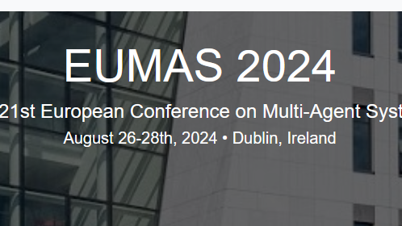
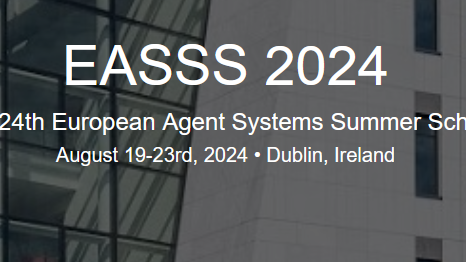

European Association for Multi-Agent Systems
Founded in 2009, the European Association for Multi-Agent Systems is a non-profit organisation aimed at promoting European science and technology in the area of multiagent systems.
EURAMAS events
EUMAS 2026
EASSS 2026
The 23nd European Conference on Multi-Agent Systems (EUMAS 2026) will be held together with EASSS2026 on September 21-25, 2026 in Malmö, Sweden.
General Chairs and Local Organizers are Fabian Lorig and Paul Davidsson (Malmö University)
Webpage: https://euramas.github.io/eumas2026/
Previous EURAMAS events
EUMAS 2025
You missed a wonderful conference!
The 22nd European Conference on Multi-Agent Systems (EUMAS 2025) was held on September 3-5, 2025 in Bucharest, Romania.
Local Organizer is the Faculty of Automatic Control and Computers at National University of Science and Technology POLITEHNICA Bucharest, Romania. Thanks to excellent organization by Alexandru Sorici, Andrei Olaru and their team, everybody felt very welcome.
Webpage: https://euramas.github.io/eumas2025/
Ca. 50 delegates discussed in 6 sessions about Engineering Multi-Agent Systems, Agent-Based Simulation, Human-Agent Interaction, Formal Methods and Learning/Networking, etc. Particular highlights were the Agent Toolkit Community Session and the invited talks by Andrei Rusu (UIPath) on Reliable Agentic Workflows and Amit K. Chopra on Interaction-oriented Foundations of Agentic AI. Soon, the formal proceedings as part of the Lecture Notes in Computer Science (LNCS) series of Springer will be available.
EASSS 2025
Collocated with EUMAS 2025, the 24th European Agent Systems Summer School (EASSS) was held on September 1-3, 2025 in Bucharest, Romania.
Local Organizer is the Faculty of Automatic Control and Computers at National University of Science and Technology POLITEHNICA Bucharest, Romania
Webpage: https://easss.upb.ro/
With 2 days of tutorials and one day overlap with EUMAS, EASSS 2025 was shorter than previous events. 34 registered students learnt about Agent-Based Simulation, Meta-Learning for Reinforcement Learning, Interaction-oriented Programming and Multi-Agent Discovery Systems. On the third day, students had the opportunity to join the industrial invited talk and sessions of EUMAS, as well as to present their posters to other students and conference participants.

EUMAS 2024
The 21st European Conference on Multi-Agent Systems (EUMAS 2024) will be on August 26-28, 2024 by the School of Computer Science at University College Dublin, Ireland.
Webpage: https://euramas.github.io/eumas2024
EUMAS 2024 is an EURAMAS designated event which follows the tradition of previous editions (Oxford 2003, Barcelona 2004, Brussels 2005, Lisbon 2006, Hammamet 2007, Bath 2008, Agia Napa 2009, Paris 2010, Maastricht 2011, Dublin 2012, Toulouse 2013, Prague 2014, Athens 2015, Valencia 2016, Evry 2017, Bergen 2018, Thessaloniki 2020, Israel (online) 2021, Düsseldorf 2022, Naples 2023), and aims to encourage and support activity in the research and development of multi- agent systems, in academic and industrial effort. The conference aspires to be the primary European forum for researchers interested in the theory and practice of autonomous agents and multi-agent systems. EUMAS enables researchers to meet, present challenges, preliminary and mature research results in an open environment. EUMAS 2024 features formal proceddings published as part of the Lecture Notes in Computer Science (LNCS) series of Springer

EASSS 2024
The 24th European Agent Systems Summer School will be held at the School of Computer Science at University College Dublin, Ireland from thre 19th to the 23rd August, 2024. The EASSS 2023 is organised under the auspices of EURAMAS, the European Association for Multi-Agent Systems.
Webpage: https://euramas.github.io/easss2024/
The main goal of the European Agent Systems Summer School is to provide exchange of knowledge among individuals and groups interested in various aspects of autonomous systems. This dissemination is provided by formal state-of-the-art courses conducted by leading experts in the field and by informal meetings during the event. The school attracts both beginner and experienced researchers, encouraging cooperation between representatives of many branches of Multi-Agent Systems research community.
The topics tackled within the field are becoming increasingly important due to ubiquity of distributed systems, including Internet of Things, intelligent buildings and cities, autonomous robots, etc. Both the practical and theoretical aspects of Multi-Agent Systems are within the scope of EASSS.